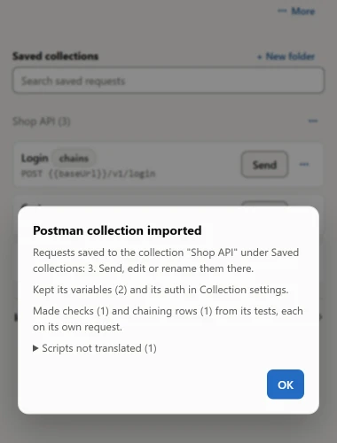

Side by side
| RequestFox | Postman | |
|---|---|---|
| Where it runs | A side panel in Chrome and Edge, a sidebar in Firefox | Desktop app and web app [1] |
| Without an account | Everything | The lightweight API Client builds and sends requests and keeps history; collections and environments need a workspace, which needs an account [2] |
| Calls your web app makes | Recorded as you click, each flagged if it failed, dragged, fired twice or broke inside a 200 OK | Postman Interceptor, a browser extension, captures browser requests and cookies into Postman while the app is open [1] |
| Protocols for your own requests | HTTP (REST, GraphQL, SOAP), WebSocket and Socket.IO; gRPC-Web and Connect with your .proto files; MCP servers; server-sent events recorded | HTTP, WebSocket, Socket.IO, GraphQL, gRPC and MQTT [2] |
| Team sharing | As files: collections, sessions, HAR, reports | Workspaces [2] |
Is there still a Postman Chrome app?
No. On Postman said Chrome apps were being deprecated and that new features would go only to its native apps, for Windows, Mac and Linux [3]. Today Postman runs as a desktop app and a web app, and its browser extension, Interceptor, captures browser requests and cookies and sends them to Postman [1].
RequestFox isn't a copy of that app, and it's not a team workspace. It's a browser extension for Chrome, Edge and Firefox that records and judges the calls your own web app makes. It has no cloud sync and no gRPC or MQTT client (gRPC-Web and Connect only); you share work as files.
Where Postman is stronger
- Team work: collections and environments live in workspaces you can share [2].
- More protocols: gRPC and MQTT clients [2]. RequestFox sends gRPC-Web and Connect only, and has no MQTT client.
- As a desktop app, it isn't bound by a web page's CORS rules.
Where RequestFox is different
- It starts from what your app actually sends, in the session you're signed in to, so there's nothing to retype.
- It judges the calls: failed, slow, duplicate and retried requests, N+1 bursts, GraphQL errors in a 200, expired tokens and changed shapes are flagged as they happen.
- Mock and fault rules change the responses your app gets, labelled so nobody files them as bugs. Mock sets stay on with nothing recording, and in Chrome a script can rewrite a request or response.
- No account for anything, and nothing is sent to us.
Use both
Import your Postman collections (v2.0 and v2.1) into RequestFox to send them from the browser, and export a recorded session or your saved collections as a Postman collection to keep working in Postman. Record the calls first.
Move a Postman collection into RequestFox
RequestFox reads Postman collection files (v2.0 and v2.1) and keeps what it can use.
- Open Compose, then Import → Import a collection…, and pick the file.
- RequestFox saves it as a collection of its own and says what it kept: variables and auth in the collection's settings, and the tests it turned into checks and chaining.
- Scripts it couldn't turn into checks are listed by name, so nothing is dropped silently.
- Send any request from the collection, or copy it as code.
Step by step, with the tests that come along and what to set up again: how to import a Postman collection.

Sources
- Postman Learning Center, "Capture traffic from a web browser using Postman Interceptor". Checked . learning.postman.com
- Postman Learning Center, "Build and send requests offline using the lightweight Postman API Client". Checked . learning.postman.com
- Postman Blog, "Goodbye Postman Chrome app", 1 November 2017. Checked . blog.postman.com
Something here out of date? Tools change. Tell us at the address in the privacy policy and we'll fix it.